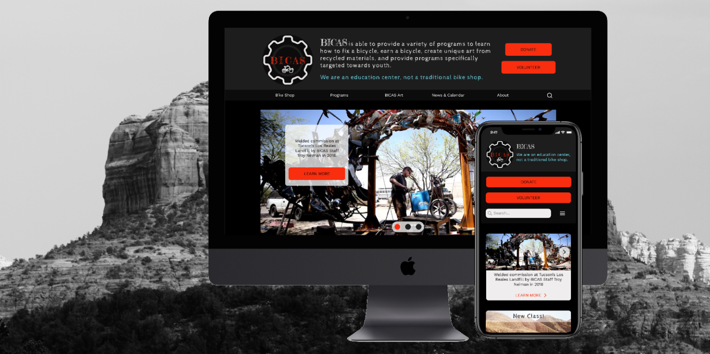
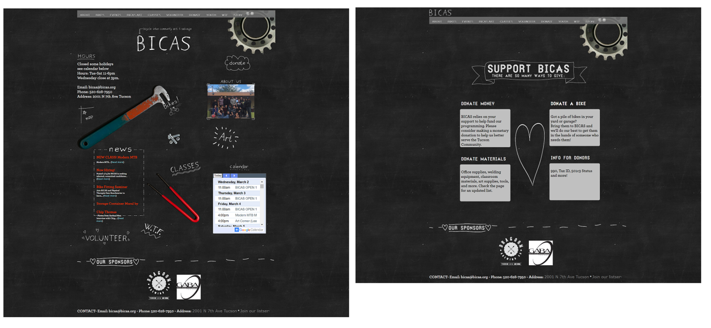
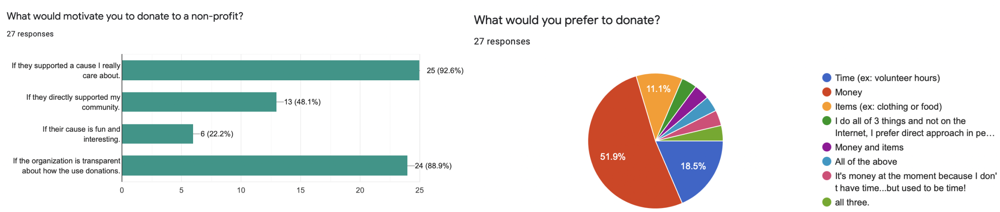
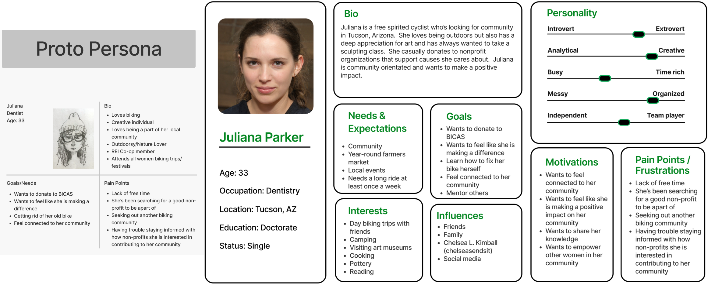
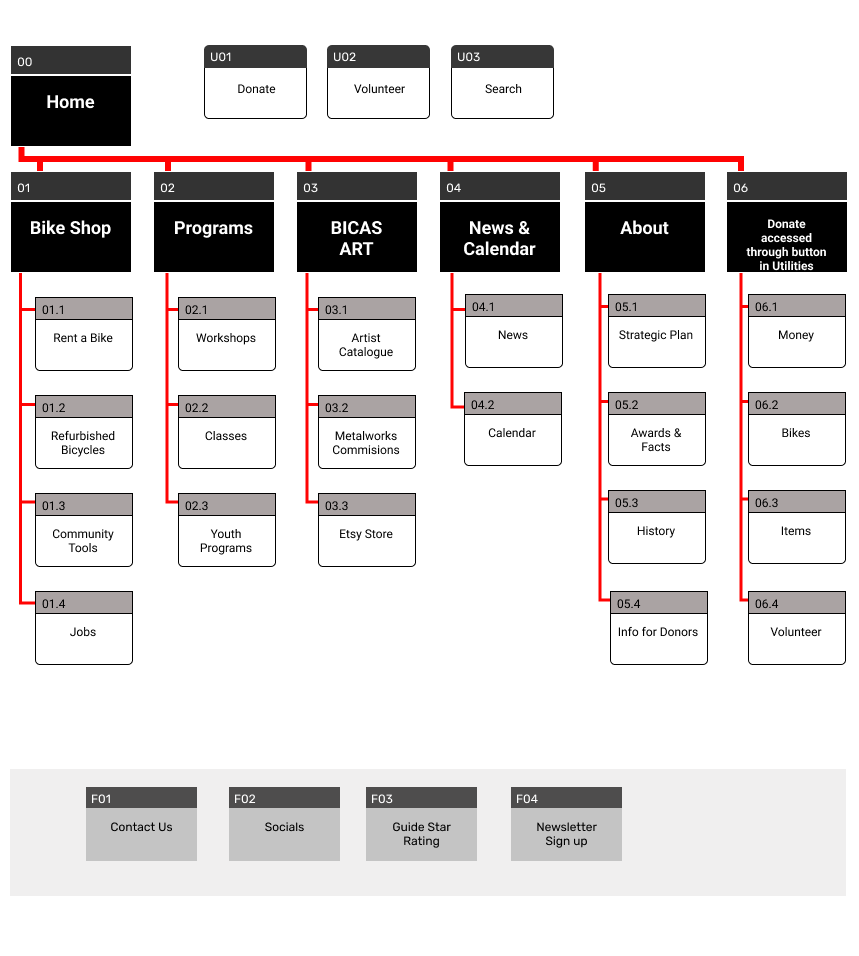
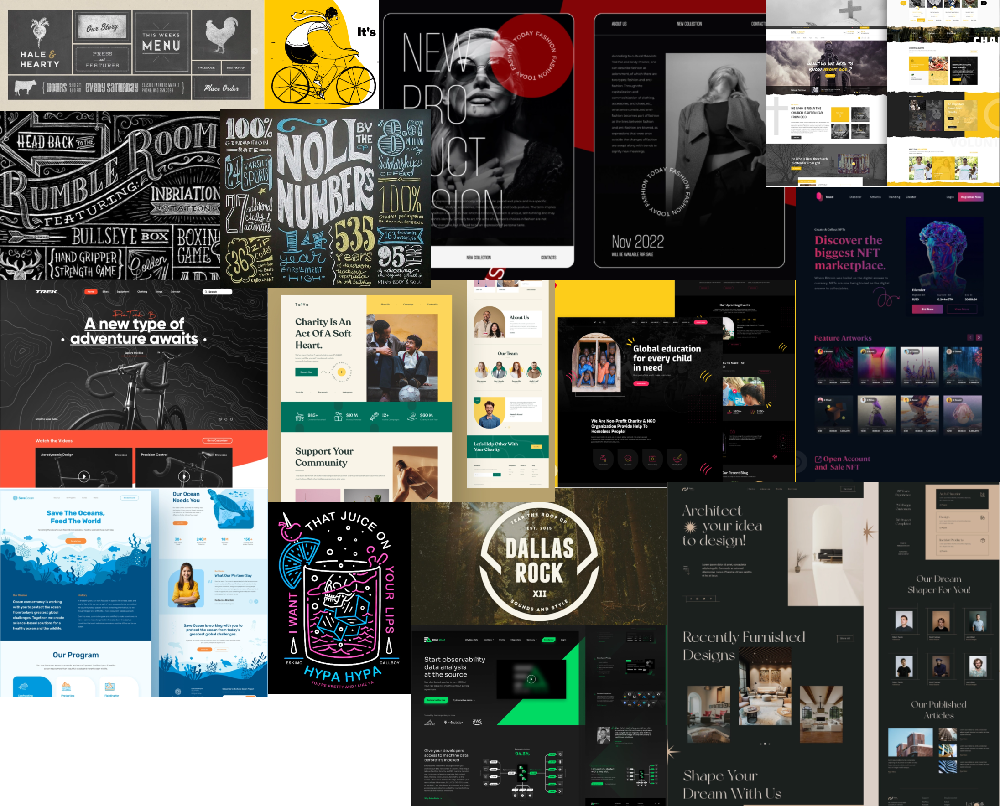
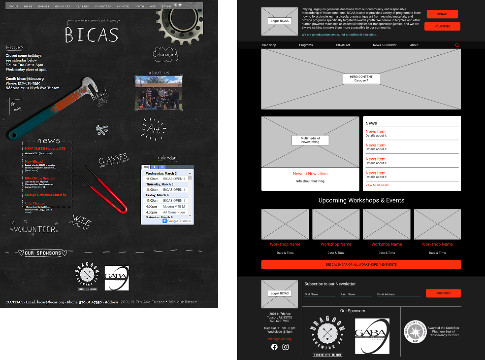
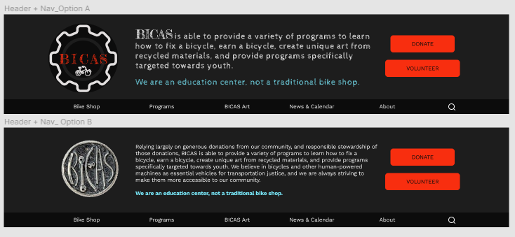
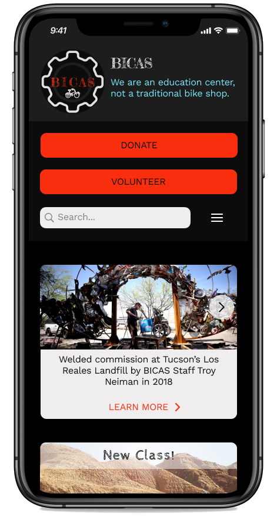
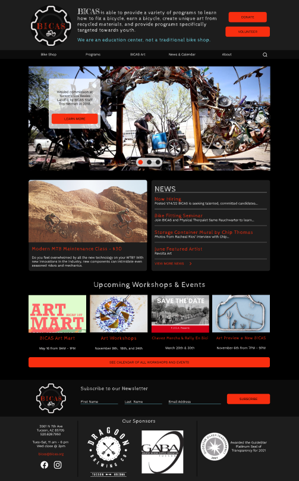

BICAS - a responsive redesign of a nonprofit’s website
I helped a nonprofit bring awareness to their cause and mission through the introduction of an updated navigation sytem and reorganization of their website.
SCOPE
UX research, responsive redesign of existing website to high-fidelity w/ clickable prototypes
ROLE
UX Researcher & UI Designer w/ 3 others
TIMELINE
3 weeks
TOOLS
Miro, Figma, Zoom, Google Suite, Whimsical, Unsplash, & Pexels

THE CHALLENGE
BICAS Redesign
In a similar fashion to the structure of my first two case studies, my fourth project was a group assignment with a condensed timeline compared to the previously completed individual case study. For this web redesign, we were given the prompt of choosing a local non-profit to work on with our group members. I am a big fan of biking (check my About Me section for more on that) and an even bigger fan of representation and inclusion in outdoor activities and male-dominated sports, so I suggested BICAS as our (fairly) local organization.
The website itself is a bit outdated, but the cause is one that a lot of people can get behind, they have a little bit of everything represented in their programs. Redesigning the website to showcase all the work BICAS does, making it look engaging, organizing the information contained within, simplifying the navigation, making it more accessible, and focusing on a responsive mobile version was a big endeavor. In all honesty, I didn't really understand the sheer breadth of work this non-profit does until we were a week into the project. With the help of my group members, we were able to efficiently give the website a make-over and I finally made a prototype that didn't have a lot of blue and/or green in it.
The Problem
BICAS is a nonprofit organization based in Tucson that focuses on A LOT of initiatives around fostering community, empowerment, inclusion, the arts, access to transportation, conservation, youth programming... you get the idea. Their current website does not clearly state all of their programs/initiatives, which causes new users to feel confused about the organization's purpose and ultimately discourages them from donating.
The Solution
A responsive web design that focuses on delivering the organization's cause/mission upfront and utilizes a simple and intuitive navigation system to navigate to additional pages.
SQUARE ONE
Current Website
We worked on this project starting in mid-February and ending in early March. Not captured is the COVID pop-up that occurs every time the user navigates to a different page. Scaling/sizing is an issue regardless of how the website is viewed. Heuristic evaluation of pages

Homepage and Donate page in early March 2022
THE DISCOVERY
Potential Donors Want Fast, Easy, & Reassurance
Interviewing and surveying people that have previously donated to at least one non-profit revealed that users want:
To know what a non-profit does and make sure it aligns with their beliefs/passions
To see how the non-profit allocates their funds/resources
To be able to research the organization using its website
To donate money over anything else because it's quick, can be a one-time thing, and they know it will go to good use (after vetting the organization)
A well-known quote, contained in a blockquote element.

Proto and User Persona
We created a proto-persona, Juliana Parker, to base the redesign on. Based on our user interviews we updated Juliana to a user-persona, giving her some of the values of the non-profit and highlighting what she looks for when considering donating to an organization.

THE FRAMEWORK
What Does BICAS do?
It became clear that the navigation on the current website works if the user is willing to click around for a while, but 12 clickable items in the navbar seemed cluttered. To fix this we used the define, group, structure card sorting technique to reorganize the main navigation of the website. This newly defined navigation was based on hierarchy, putting the most important information up in the front for easy access and grouping together some of the pages that felt like one-offs with the current organization.
By reorganizing the navbar and moving some of those 12 links to the footer or deeper into the page hierarchy we were able to give the navigation system some breathing room and make it appear less cluttered, despite ultimately having 9 items that are clickable in the navbar of the prototype.

New BICAS Sitemap
Who is BICAS?
Before jumping into wireframing, I put together a moodboard of UI patterns and designs for inspiration. As a group, we wanted to pay homage/incorporate that chalkboard feel into the redesign as well as stick to the established color palette of the current website.

UI Inspiration / Moodboard (pulled from Dribbble shots)
With the redesign, it was important to define what the branding of the new site would look like. We wanted to use colors from the existing color palette and introduced a yellow to keep to a primary color + black and white theme, something that fits with that chalkboard/education them present in the current design. The typography was updated (and enlarged), using a hand-drawn looking display font as a nod towards that chalkboard and a sans serif for the body copy for legibility. I scoured the BICAS social media accounts (and even Etsy page) to find images to use, with many from the website ultimately being too small.
In our minds, the chalkboard feel could be incorporated throughout the page in a less obvious way through hand-drawn/stylized icons, keeping the background largely black/charcoal, and adding some micro-interactions with some of the content to mimic the idea of the current homepage.
THE REFINEMENT
Put the Pedal to the Metal
With the sitemap in hand, I made a mid-fi wireframe of the desktop homepage while my group members worked on the style guide. Serendipitously I used colors that were dead ringers for the colors selected by them, so there wasn't a lot to change style-wise between the mid and high-fi prototypes. At this point, I check accessibility as I'm working so I don't fall in love with a color that won't work with the color palette, so that was already squared away as well.
With the sitemap in hand, I made a mid-fi wireframe of the desktop homepage while my group members worked on the style guide. Serendipitously I used colors that were dead ringers for the colors selected by them, so there wasn't a lot to change style-wise between the mid and high-fi prototypes. At this point, I check accessibility as I'm working so I don't fall in love with a color that won't work with the color palette, so that was already squared away as well.

Usability Testing
We conducted usability testing on the mid-fi desktop prototype with 6 users. Testers were asked to:
Navigate to the Donate page - 100% success rate
Select to donate money - 80% users quickly found where they could donate money
Simulate completing their donation - 100% users understood the donation form
KEY TAKEAWAYS
Users can still navigate through the site with a Donate button in the header, rather than a link in the navbar
Users were confused that the Donate page just said "money" rather than "Donate money"
Users understood how the form would work for donating money

A/B Testing
We also conducted A/B testing on the desktop header with 5 users to see which logo + mission statement menu was preferred (see pictures above).
80% of users found the logo pulled from the BICAS Art Instagram page (option B) difficult to read and found it reminded them of bones. The full mission statement was also A LOT of text in a small section, so users also preferred the more succinct version.
THE END RESULT
A New Homepage
Using the feedback from user testing, I iterated the wireframes for a final time (for the bootcamp) and applied the visual design described above. Keeping to the style/color palette of the original website while bringing focus to all the work BICAS does was the ultimate goal of the style guide and redesign.
Overall, the new BICAS style is adventurous, bold, fun, and artsy.
At the time of publishing this case study, Figma did not have a good prototype device to display the desktop-sized frames, so please view full screen.
Mobile Second?
For the mobile version, I scaled down from the desktop version, keeping in mind responsive design best practices. I spent more time than I should have adding an animation into the hamburger icon as it is opening, so now I know better for next time.

Clickable Mobile Prototype

Clickable Desktop Prototype
THE REVIEW
What I Learned
This turned into a bigger challenge than I was expecting, which I think is part of my reflection on EVERY project. I pitched this nonprofit to my group because I love biking, and I thought the website could use some help. Little did I know just how many things BICAS does and all the various initiatives/groups housed within the website. Understanding what was housed in the website, chunking/grouping content, simplifying the navigation system, and bringing BICAS' mission to the forefront was key.
Designing in a Group
Throughout this bootcamp, we've had activities and homework where we worked in groups for certain parts, but ultimately we all created our own prototypes. This was the first project where I shared responsibility for a single prototype (that was versioned up) and collaborated on making design decisions. Using our mock Agile environment, my group laid out on day one what we felt our individual strengths and weaknesses were/are and played to those strengths to efficiently create an end product we were all proud of and all contributed towards. With regular check-ins and open communication, we worked well as a group and were able to divvy up the work so none of us felt swamped. We were also able to bounce ideas off of each other and run tests/interviews with a more varied group than the same 5+ people I lean on for testing.
Next Steps
There's always room for improvement on these projects. My list of potential edits includes:
Updating the donation form, it's currently pulled from an external site that processes the donations, but I think it could be broken up more rather than being a single page
Build out the about page, there's a lot of history for BICAS, and potential donors like to feel connected to smaller nonprofits/see the faces of the people involved
Add in more micro-interactions like those on the donate page in the Year in Review section, they're simple, but they add a lot of that ever-important "delight" for the user
Build out a calendar page with tabs for classes, shop hours, workshops, etc. The never-ending calendar on the current homepage is a start, but a more inviting calendar would lead to more engagement from users